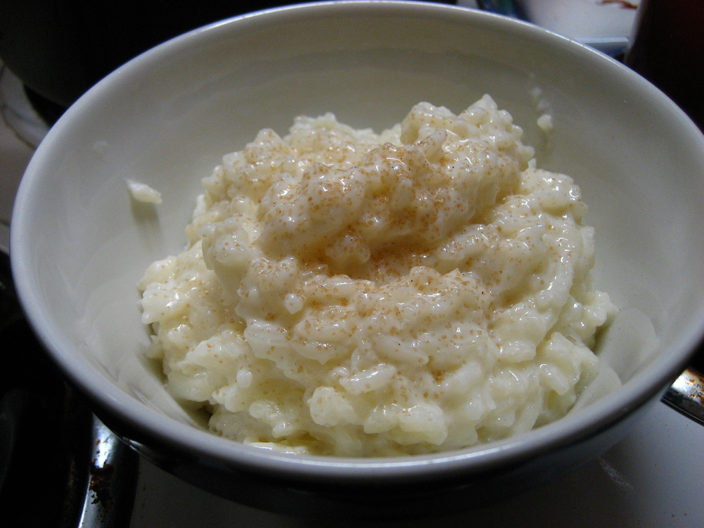

Rice Pudding

Description
Creamy and cheap, the perfect easy desert.
Ingredients
- 100g pudding rice
- 25g caster sugar
- 700ml whole milk
- butter, for the dish
- ground nutmeg, to top
Instructions
- Preheat the oven to 140°C
- Grease a shallow oven dish with butter
- Add the pudding rice and caster sugar to the dish
- Cover with the milk
- Sprinkle the ground nutmeg over the top
- Cook for 90min, ensuring the rice is tender